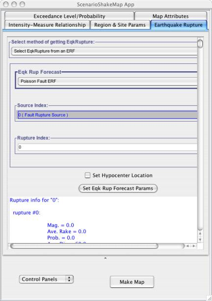
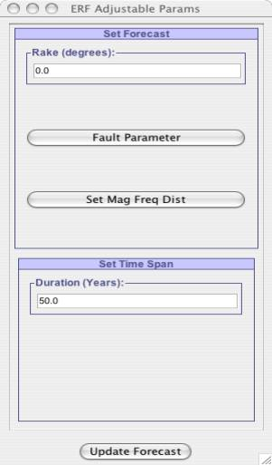

As Fig-1 shows, user can select a rupture from already existing Earthquake Rupture Forecast (ERF) models. Currently this application supports following ERF models:
(i) Poisson Fault ERF
(ii) USGS/CGS 1996 Adj. Cal. ERF
(iii) STEP ERF
(iv) Floating Poisson Fault ERF
(v) USGS/CGS 2002 Adj. Cal. ERF
(vi) WG02 Eqk Rup Forecast
User can configure these ERF models by adjusting the parameters for these ERF's by clicking on Set Eqk Rup Forecast Params, which will pop up a window as shown in Fig - 1(a). Once this window pops up user can adjust parameters for the ERF model. For example in the case of Fig-1, when user clicks on Set Eqk Rup Forecast Params, window pops up as shown in Fig – 1(a), which allows user adjust parameters for the Poisson Fault ERF. It also helps user define the Fault Surface and Magnitude Frequency Distribution for the Poisson Fault ERF as shown in Fig –1(a)(a) and Fig –1(a)(b).
Now once user is done adjusting all the parameters for the ERF model, he/she can click on Update Forecast button as shown in Fig – 1(a). This will update the ERF model with new parameter values that user has inputted. While ERF is updated user will be shown a progress bar that keeps him/her updated, because updating can take a while depending on ERF model chosen by user. Once the ERF model is updated it will update the number of sources within this forecast model. User can select a source from the Source Index and correspondingly select a rupture from Rupture Index as shown in Fig – 1. In the case Fig – 1, Poisson Fault ERF supports just single source, so user is not given any choice to select source. But this source supports 84 ruptures. Rupture Index parameter in Fig – 1 is restricted by number of ruptures supported by the selected source. When user hovers mouse over the Rupture Index parameter, user can see number of ruptures within the selected source. If user scroll-down the window in Fig – 1, he/she can see information about all ruptures within the selected Source Index.
User can set the hypocenter location for the selected rupture by Checking the Set Hypocenter Location checkbox. Once this is selected, list of hypocenter locations will appear, from which user can pick one location as hypocenter location.
Note: If user has chosen the Intensity Measure Relationship model to be of Abrahamson-2000, it requires that earthquake rupture must have a hypocenter location, so user will need to set the Hypocenter location in its case. Even if user forgets to do so, he/she will prompted to do so via a user friendly message by the application.
|  |
Fig - 1: Figure shows user can select rupture from already existing EarthquakeRupture Forecast. Label Eqk Rup Forecast presents user with list of supported Earthquake Rupture Forecast models supported in our framework. |
|  | ||||
|
Fig – 1(a) : Figure shows Adjustable Parameters for Poisson Fault ERF.It also allows user to set the Timespan for the selected earthquake rupture forecast model.
|